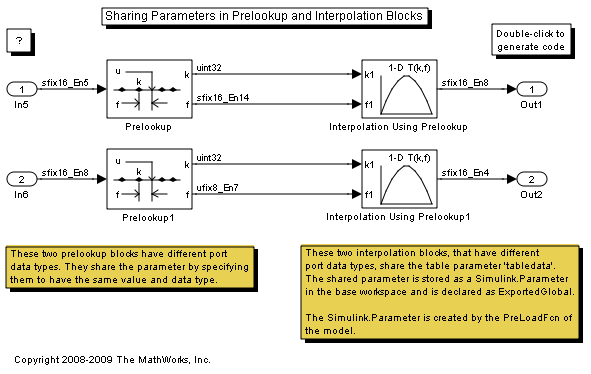

Sharing Parameters in Prelookup and Interpolation Blocks
The Prelookup and Interpolation Using Prelookup blocks have support for specifying the data type for the breakpoints and table parameters. This makes it possible for blocks that have different port data types to share their parameter data in the generated code. One way of doing this is to specify the parameter with the same values and data types in multiple blocks. This is done in the Prelookup blocks in this model. Another way is to use a Simulink.Parameter object to define the blocks' shared parameter. This is done for the Interpolation blocks. The Table data type must be set to: Inherit: Inherit from 'Table data'.
For parameter sharing to take effect, the Inline parameters check box must be selected in the Optimization pane of the Configuration Parameters dialog box.
To see this in the generated code, open the model and build it.
